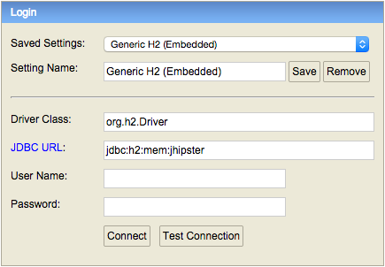

By default, JHipster uses the "development" profile, so you don't have to configure anything.
If you want more information on the available profiles, please go the section titled "Profiles".
From your IDE, right-click on the "Application" class at the root of your Java package hierarchy, and run it directly. You should also be able to debug it as easily.
The application will be available on http://localhost:8080.
You can launch the Java server with Maven:
mvn spring-boot:run
The application will be available on http://localhost:8080.
If you want more information on using Maven, please go to http://maven.apache.org
If you selected the Gradle option when creating the project, you can launch the Java server with Gradle:
gradle bootRun
The application will be available on http://localhost:8080.
We highly recommend you use this feature, as it allows to have live reloading of your client-side code.
You can run Grunt to work on the client-side JavaScript application:
grunt server
This should open up your Web browser, with live reload enabled, on http://localhost:9000. As soon as you modify one of your HTML/CSS/JavaScript file, your browser should refresh itself automatically.
If you have generated your application with the Sass/Compass option, your templates should also be automatically compiled into CSS.
This Grunt server has a proxy to the REST endpoints on the Java server which we just launched (on http://localhost:8080/rest), so it should be able to do live REST requests to the Java back-end.
If you want more information on using Grunt, please go to http://gruntjs.com.
You can use bower normally to update your JavaScript dependencies:
bower update
Or if you want to install a new JavaScript dependency:
bower install <package>
Your JavaScript dependencies will be stored in your src/main/webapp/bower_components folder, and we believe it is a good idea to store them in your Git repository (but JHispter does not force you to do so).
If you want more information on using Bower, please go to http://bower.io.
If you choose the H2 database (the default option for development with an SQL database), you can access its console at http://localhost:8080/console by default.
To connect to the database, select the pre-configured options:

If you add or modify a JPA entity, you will need to update your database schema.
JHipster uses Liquibase and stores its configuration in /src/main/resources/config/liquibase/.
If you use our entity sub-generator, a Liquibase "change set" will be automatically
generated in your config/liquibase/changelog/ directory. You can edit it, and customize it according to your needs.
If you prefer (or need) to do a database update manually, your development process should be:
config/liquibase/changelog directory. The files in that directory are prefixed by their creation date (in yyyyMMddHHmmss format), and then have a title describing what they do. For example, 20141006152300_added_price_to_product.xml is a good name.config/liquibase/master.xml file.When you startup your application, Spring Boot will update your database schema automatically using Liquibase.
If you want more information on using Liquibase, please go to http://www.liquibase.org.
Internationalization (or i18n) is a first-class citizen in JHipster, as we believe it should be set up at the beginning of your project (and not as an afterthought).
Usage is really easy thanks to Angular Translate, which provides a simple AngularJS directive for i18n.
For example, to add a translation to the "first name" field, just add a "translate" attribute with a key:
<label translate="settings.form.firstname">First Name</label>
This key references a JSON document, which will return the translated String. AngularJS will then replace the "First Name" String with the translated version.
For example, here are the translations provided by default in JHipster for English and for French.
If you speak another language and are ready to help, feel free to send us your own translations!